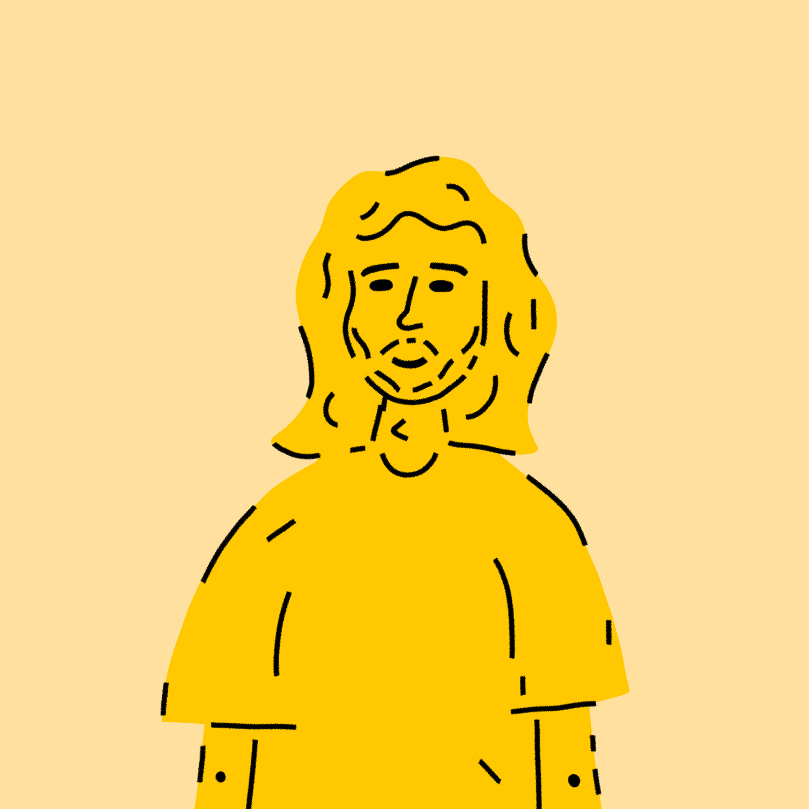

Łukasz Biernacki
Jak znaleźć pracę w grafice 1
13.10.2020
Odpowiem od razu, nie wiem.
Nie ma jednej odpowiedzi na to pytanie, a
ten artykuł jest dla osób, które
posiadają już umiejętności i są o krok od zmonetyzowania
swojej pracy.
Planuję rozpisać ten temat na kilka artykułów.
Opiszę dokładniej sposoby dzięki którym,
możemy pozyskać klienta i przyjemne dla nas zlecenie.
A wszystko będę testował na sobie.
Tworzenie identyfikacji wizualnej dla wymyślonej marki.
Wstęp
Pierwszy ze sposobów, zrealizowałem niedawno.
Zaprojektowałem niewielką identyfikację wizualną
dla kawiarni którą nazwałem "Dobra Kawa".
Przeprowadzę Was przez proces tworzenia
od wymyślenia nazwy po layout strony internetowej.
Czy są jakieś efekty? Narazie nie jestem w stanie stwierdzić.
Pokładam nadzieję, że poświęcony czas się zwróci.
Najlepiej w postaci zlecenia, ale nie byłbym taki optymistyczny.
Nowy obserwator na instragramie, czy nowe umiejętności
to też sowita zapłata.
Współpraca z ogranizacjami non-profit
Zanim samodzielnie zaczniemy tworzyć markę od podstaw,
zastanówmy się czy jakaś znajoma organizacja non-profit,
nie potrzebuje wsparcia graficznego.
W moim przypadku, zacząłem pomagać Młodzieżowemu
Strajkowi Klimatycznemu w moim mieście. Miałem dużą swobodę pracy,
co pozwoliło mi stworzyć kilka ciekawych projektów. Oprócz tego nawiązłem nowe znajomości
i poznałem moją dziewczynę.
Co jest dobrego w takim wolontariacie?
Na pewno zalążki pracy na rzeczywistym rynku,
wartościowy feedback. Tutaj nie polecałbym szukać opinii na
grupach facebookowych, on raczej nie jest wartościowy.
Możemy też nauczyć się pracy w grupe, i przyhamowania
naszego graficznego ego. Swoboda i przyjemność pracy powinna być
zadowalająca.
Na co lepiej uważać?
Istnieje spore ryzyko, że z współpracy nie
wyniknie za dużo, organizacja po czasie może nie być już
tak zainteresowana waszymi działaniami, jak na początku, a na
koniec się dowiecie, że zatrudnili profesjonalnego grafika.
Pamiętajcie, nie dajcie się wykorzystać.
Zaczynamy tworzyć markę.
1. Koncepcja
Założyłem sobie, że chcę stworzyć identyfikację wizualną dla kawiarni.
Przez wybór branży, mogłem przejść do następnych kroków projektowania, a narazie tworzenia.
Skoro sami tworzymy naszego klienta, jak najbardziej może on być z branży,
z którą chcielibyśmy współpracować. Jeśli potencjalny klient z interesującej nas dziedziny
zobaczy takie portfolio, z pewnością zwróci uwagę na projekt dotyczący jego branży.
2. Nazwa
Mamy już zarys dla kogo pracujemy, teraz czas na szkicową
nazwę. W mojej nazwie bezprecedensu do słowa kawa, dodałem dobra. Na początku dobrze
postawić na coś prostego, żeby nie tracić na to dużo czasu
nazwę zawszę można zmienić, a w tym ćwiczeniu chodzi też o złapanie kreatywnego wiatru.
3. Logo
Następnym krokiem jaki podjąłem było kombinowanie z logo.
Na tym etpaie zaczyna się już frajda z projektowania.

żeby nie wpaść w wir poprawiania i miliona pomysłów, w razie problemów
warto ustalić sobie czas. U mnie to raczej działo się szybko, w ciągu
jednego dnia zrobiłem logo, plakat, ilustracje.
Podczas szkicowania logo, warto już układać w głowie,
jakie doświadczenia będzie dawać nam cała identyfikacja.
W moim logo postawiłem na dość prosty, nowoczesny symbol.
Symbol jest obrysem kubka i dłoni, ułożonej w gest “okej”,
na gesty w logo trzeba uważać, a szczególnie w projektach
międzynarodowych. Ale u mojej wymyślonej kawiarenki w jakimś
polskim mieście, założyłem, że to nie duży problem.
Czyli mam już jakieś doświadczenie, ale jak je zdobyć
Kiedy i gdzie założyć portfolio
Co dalej?
Portfolio (Kliknij)